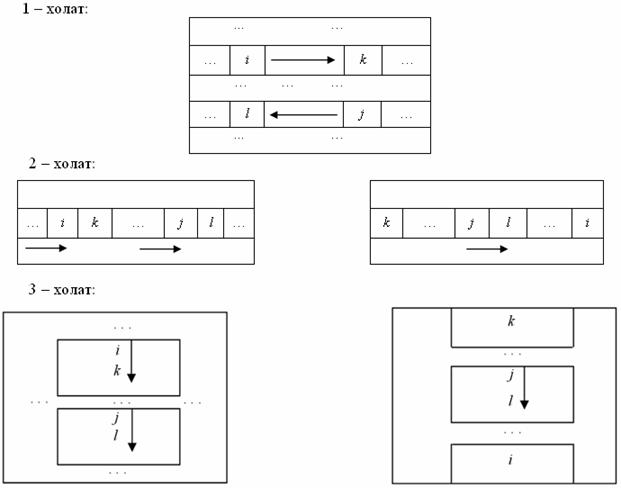
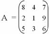
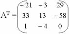

Т а р и х и й ш и ф р л а р
Ахборотнинг мухофазаси масалалари инсоният жамиятининг қадимдан мухим масаласи бўлиб келганлигини юқорида бир неча бор такидлаб ўтилди. Тарихий шифрлаш методлари турли ўлчам ва шаклдаги жадвалларга асосланган бўлиб, бу жадваллар матндаги алфавит белгиларини маълум тартибда ўрин алмаштириш ва ўрнига қҳйишни ифодаловчи содда амаллардир.
Бунда калит вазифасини жадвал ўлчами, алфавит белгиларини ўрнини алмаштиришни таъминловчи бирор кичик жумла ёки жадвалнинг ўрин алмаштиришларини тартибловчи бирор алохидалик хусусияти ва бошка шу кабилар ўтаб келган.
Кордано шифрлаш усули
16 асрда Италияда яшаган Ж.Кордано шифрлашнинг қуйида келтирилган ўзига хос методини қўллаган.
-
Иҳтиёрий квадрат шаклидаги қаттик жисм бир хил ўлчамдаги катакчаларга ажратилган ва ушбу катакчалар маълум қоидага кўра тирқишлаб тешилади.
-
Очиқ маълумотни шифрлашда ясалган восита қоғоз бўлаги устига қуйилиб, тешилган квадрат тирқишларга очиқ матнда катнашган белгилар кетма-кетликда ёзиб чиқилади.
-
Хамма тешилган тирқишлар ишлатиб бўлингач, Кордано ғалвирни шу турган жойнинг ўзида 90о бурчак остида иҳтиёрий томонга буради ва қолган очиқ матн белгилари ёзиб чикилади.
-
Бурилишлар бир жойда 4 марта такрорлангандан кейин, ғалвир янги жойга кўчирилган ва хакозо шу тартиб очиқ матнда катнашган барча белгиларни ёзиб бўлгунча давом эттирилиб, шифрлаш жараёни тўхтатилади. Ғалвир қоғоз бўлаги устидан олинган ва шифрланган матнда учраган бўш қолган жойлар бўлса, иҳтиёрий белгилар ҳисобига ҳар бир шифрматн сатри тўлдирилиб чиқилган.
Кордано ғалвирига бўлган ягона ва асосий талаб шундан иборатки, уни бир жойнинг ўзида 4 марта буришда тирқишларга ёзилган белгилар устма-уст тушиб колмаслиги лозим бўлади.
Қуйида Кордано шифрлаш методининг хусусий холи бўлган яна бир шифрлаш методини келтирамиз.
Ришеле шифрлаш усули
Очиқ матни шифрлашда худди Кордано шифрлаш методидаги қилинадиган барча ишлар бу ерда бажарилиб, фарқ киладиган томони шундан иборатки, шифрлаш ғалвири қогоз бўлаги устида иҳтиёрий бурчак остида маълум томонга бурилмайди, аксинча шифрлаш кетма-кет бажарилиб кетилади.
Шифрлаш жараёни тўхтатилгач, ғалвир қогоз бўлаги устидан олинган ва шифрланган матнда учраган бўш колган жойлар, иҳтиёрий белгилар ҳисобига ҳар бир шифрматн сатри тўлдирилиб чиқилган. Бу ерда Ришеле алоҳида ахамият берган томон шундан ибораткий ушбу тўлдирган шифр матн сатрлари ўзида бирор бир мазмун касб этган.
Цезарь шифрлаш усули
Цезарь шифрлаш методининг асосий моҳияти шундан ибораткий, шифрланиши керак бўлган жумладаги барча ҳарфларни маълум сон бирлик силжитиш.
Агар шифрланаётган бирор белгининг алфавитда турган ўрни i бўлса, шифрлангандан кейинги холатда, унинг ўрнини мос равишда i+3 ўринда турган ҳарф эгаллайди. (Агар алвафит ҳарфлари мос равишда 3 марта силжитилса).
Математик жихатдан ифодаланадиган бўлса,
L=(i+3) mod N
ёзув ўринли бўлиб, бу ерда N - алфавитда қатнашган белгилар сони.
Масалан. «kalit va shifr» жумласини ушбу метод ёрдамида шифрлаймиз. Силжитишлар сони 2 га тенг бўлсин. (Лотин алифбоси ҳарфларидан фойдаланамиз, бу ерда N ни киймати 27 га тенг).
Шифрлаш жараёни қуйидаги жадвалда кўрамиз:
|
1 |
k |
a |
l |
i |
t |
|
v |
a |
|
s |
h |
i |
f |
r |
|
2 |
11 |
1 |
12 |
9 |
20 |
0 |
22 |
1 |
0 |
19 |
8 |
9 |
6 |
18 |
|
3 |
13 |
3 |
15 |
11 |
22 |
2 |
24 |
3 |
2 |
21 |
10 |
11 |
8 |
20 |
|
4 |
m |
c |
o |
k |
v |
b |
x |
c |
b |
u |
j |
k |
h |
t |
бу ерда,
1-сатр – шифрланиши керак бўлган жумла ёки очиқ матн
2-сатр – жумла ҳарфларининг лотин алифбосида турган ўрни;
3-сатр – силжитишдан кейинги мос ҳарфларнинг лотин алифбосида турган ўринлари;
4-сатр – шифрланган жумла ёки шифр матн.
Тритемий жадвали
1518 йил Аббат Тритемий муаллифлигида ёзилган “Полиграфия” асарда биринчи марта квадратик жадвал хақида сўз юритган бўлиб, бу жадвални у ўз номи билан “Тритемий жадвали” деб номлаган.
“Тритемий жадвали”дан фойдаланиш хеч қандай механик мосламани талаб килмайди. Жадвал сатрлари тагма-таг жойлашган холда бўлиб, белгилар олдинги холатидан бир қадам чапга сурилади.
“Тритемий жадвали”нинг лотин алифбосига асосланган кўринишини келтирамиз:
А В C D E F G H I J K L M N O P Q R S T U V W X Y Z
B C D E F G H I J K L M N O P Q R S T U V W X Y Z A
C D E F G H I J K L M N O P Q R S T U V W X Y Z A B
D E F G H I J K L M N O P Q R S T U V W X Y Z A B C
E F G H I J K L M N O P Q R S T U V W X Y Z A B C D
F G H I J K L M N O P Q R S T U V W X Y Z A B C D E
..............................................................................................
..............................................................................................
X Y Z A B C D E F G H I J K L M N O P Q R S T U V W
Y Z A B C D E F G H I J K L M N O P Q R S T U V W X
Z A B C D E F G H I J K L M N O P Q R S T U V W X Y
“Тритемий жадвали” шундай тузилганки, ундаги биринчи сатр ҳар доим очиқ матн белгилари бўлиб ҳисобланади.
Бирор очиқ матнни “Тритемий жадвали”га кўра шифрлашда, биринчи белги биринчи сатр бўйича, иккинчи белги эса иккинчи сатр бўйича шифрланади ва хоказо, охирги белги жадвалнинг охирги сатри бўйича шифрлангандан кейин, очиқ матннинг қолган белгилари яна биринчи сатрга кайтилиб ушбу жараён яна худди шу тартибда давом эттирилади.
“Тритемий жадвали”дан фойдаланиб “AXBOROT” очиқ матнни шифрлаш амалга оширилса, “AYDRVTZ” кўринишдаги шифр матн хосил қилинади.
Плейфер шифрлаш усули
Плейфер шифрининг асосини туғри туртбурчакли жадвалга (эсда сақлаб қолишни осонлаштириш мақсадида) систематик тарзда аралаштириб ёзилган алфавит ташкил этади.
Шифрлаш қоидаси қуйидагидан иборат:
Ҳарфлар биграммаси (шифркатталик бўлган) (i,j), ??j берилган жадвалда жойлашган. Шифрлаш жараёнида (i,j) биграмма ўрнига (k,l) биграмма қўйилади, бу ерда k ва l лар 1-3 қоидаларга кўра аникланади.
1. Агар i ва j бир сатр ёки бир устунда ётмаса, у холда уларнинг ўринлари туғри туртбурчакнинг карама-карши учларини ташкил этади. У холда k ва l туғри туртбурчакнинг иккинчи жуфт учларини ташкил этади, бу ерда k ва i бир сатрда ётади.
2. Агар i ва j бир сатрда ётган бўлса, у холда k ва l худди уша каторда бевосита i ва j лардан мос равишда унг томонидаги ҳарфлар олинади. Шу билан бирга агар ҳарфлардан бири каторнинг охирида жойлашган бўлса, у холда шу сатрдаги биринчи ҳарф унинг “унг томондаги кушниси” ҳисобланади.
3. Худди шу тарзда, агар i ва j бир устунда ётган бўлса, у холда улар “пастки кушнилари” билан алмаштирилади.
Ушбу қоидаларни қуйида схематик тарзда кўрамиз.

Шифрлаш жараёнини бошлашдан олдин очиқ матнда иштирок этган барча белгилар биграммалар кетма-кетлиги кўринишида ёзиб олинади. Агар матн узунлиги ток ёки бир хил ҳарфлардан ташкил топган биграммалардан иборат бўлса, у холда матнга “пустишка”лар кушилади. “Пустишка” бу биграмманинг бир хил ҳарфлари орасига қуйиладиган ёки матн узунлиги жуфт булиши учун унинг орасига кушиладиган берилган матн тури учун кам учрайдиган ҳарф ёки белгидир. Одатда очиқ матндаги бундай узгаришлар, шифрматнни очиш пайтида кийинчилик тугдирмайди.
Масалан, “Командир” калит сўзи асосида, 30 та ҳарфдан иборат кирил алфавити систематик тарзда аралаштирилиб ёзилган 5 х 6 улчамли туғри туртбурчакли жадвални шифр учун кўллаб
|
к |
о |
м |
а |
н |
д |
|
и |
р |
б |
в |
г |
е |
|
ж |
з |
л |
п |
с |
т |
|
у |
ф |
х |
ц |
ч |
ш |
|
щ |
ь |
ы |
э |
ю |
я |
“Усулнинг муаллифи Уитстон” сўзини шифрлайлик. “Пустишка” сифатида кам учрайдиган “ж” ҳарфини ишлатамиз.
Сўзни биграммалар кетма-кетлиги кўринишида ифодалаймиз:
УС УЛ НИ НГ МУ АЛ ЛИ ФИ УИ ТС ТО НЖ
(“Пустишкани” бир марта ишлатдик).
Юқорида келтирилган қоидаларга кўра қуйидаги шифрматнни оламиз:
ЧЖ ХЖ КГ ГС КХ МП ЖБ УР ЩЖ ЖТ ЗД СК
ёки биграммалар орасидаги бушликларсиз ёзсак, чжхжкггскхмпжбурщжжтздск
Виженер шифрлаш усули
Маълумотни Виженер методи ёрдамида шифрлашда, шифрланаётган очиқ маълумотда катнашган ҳар бир белги алохида-алохида калит жумласидаги ҳарфларнинг алфавитда турган ўрнига караб шунчага сурилади.
Масалан, «SALOM» калит жумласи ёрдамида «MAXFIY ’MALUMOT» жумласи шифрлансин.
Шифрлаш жараёни қуйидаги жадвалда кўрамиз.
|
1 |
m |
a |
x |
f |
i |
y |
|
m |
a |
’ |
l |
u |
m |
o |
t |
|
2 |
13 |
1 |
24 |
6 |
9 |
25 |
0 |
13 |
1 |
26 |
12 |
21 |
13 |
15 |
20 |
|
3 |
s |
a |
l |
o |
m |
s |
a |
l |
o |
m |
s |
a |
l |
o |
m |
|
4 |
19 |
1 |
12 |
15 |
13 |
19 |
1 |
12 |
15 |
13 |
19 |
1 |
12 |
15 |
13 |
|
5 |
32 |
2 |
36 |
21 |
22 |
44 |
1 |
25 |
16 |
39 |
31 |
22 |
25 |
30 |
33 |
|
6 |
5 |
2 |
9 |
21 |
22 |
17 |
1 |
25 |
16 |
12 |
4 |
22 |
25 |
3 |
6 |
|
7 |
e |
b |
i |
u |
v |
q |
a |
y |
p |
l |
d |
v |
y |
c |
f |
бу ерда,
1-сатр – шифрланиши керак бўлган жумла ёки очиқ матн;
2-сатр – жумла ҳарфларининг лотин алифбосида турган ўрни;
3-сатр – очиқ маълумот узунлигига тенг бўлган калит жумла;
4-сатр – калит жумла ҳарфларининг лотин алифбосида турган ўрни;
5-сатр – 2 ва 4-сатрларни йигиндиси;
6-сатр – 5-сатрни 27 модул буйича булиш натижаси;
7-сатр – шифрланган жумла ёки шифрматн.
Л.Хилла шифри ёки шифрлашнинг аналитик усуллари
Ушбу усул матрицалар назариясига асосланган шифрлаш методи ҳисобланади.
Дастлабки ахборотнинг Вk=(bj) вектор кўринишида берилган k блокини шифрлаш А=(aij) матрица калитни Вk векторга кўпайтириш орқали амалга оширилади. Натижада Ck=(ci) вектор кўринишидаги шифрматн блоки хосил қилинади.
Бу векторнинг элементлари ci =aij bj ифода оркали аникланади. Ахборотни кайта тиклаш яъни дешифрлаш, Ck векторларини А матрицага тескари бўлган А-1 матрицага кетма-кет купайтириш оркали аникланади.
Масалан, То=“GRAFIK” сўзини қуйидаги A матрица калитга кўра шифрлаш ва дешифрлаш талаб этилсин.

Дастлабки сўзни ШИФРЛАШ учун қуйидаги қадамларни бажариш лозим:
1-қадам. Дастлабки сўзнинг алфавитдаги хафрлар тартиб раками кетма-кетлигига мос сон эквивалентини аниклаш.
ТЭ = “7, 18, 1, 6, 9, 11”
2-қадам. А матрицани В1 = (7, 18, 1) ва В2 = (6, 9, 11) векторларга купайтириш.
С1 = A B1 ва C2 = A B2

3-қадам. Шифрланган сўзни кетма-кет сонлар кўринишида ёзиш.
Тш = “135, 41, 95, 161, 120, 123”
Ушбу қадамдан сўнг шифрлаш жараёни тугайди.
Кейин шифрланган сўзни ДЕШИФРЛАШ учун қуйидагича амал кетма-кетлиги бажарилади:
1-қадам. А матрицанинг аникловчиси ҳисобланади:
 = - 29
= - 29
2-қадам. Ҳар бир элементи А матрицадаги aij элементнинг алгебраик тулдирувчиси бўлган бириктирилган матрица А* аникланади.

3-қадам. Транспонирланган матрица АТ аникланади.

4-қадам. Қуйидаги формула буйича тескари матрица А-1 ҳисобланади:
А-1
= АТ
/

5-қадам. В1 ва В2 векторлар аникланади:
В1 = А-1 С1
В2 = А-1 C2
6-қадам. Дешифрланган сўзнинг сон эквиваленти ТЭ =“7, 18, 1, 6, 9, 11” мос алфавитдаги хафрлар билан алмаштирилади. Натижада дастлабки сўз То =“GRAFIK” Ҳосил бўлади.